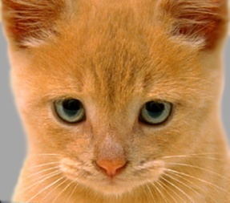
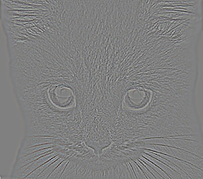
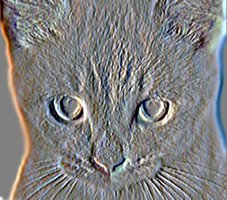
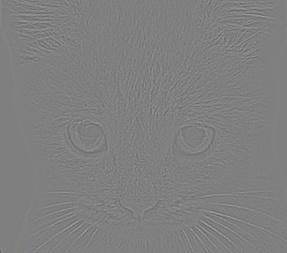
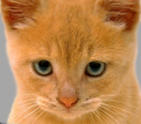
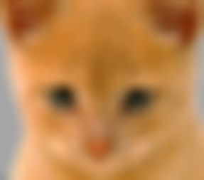
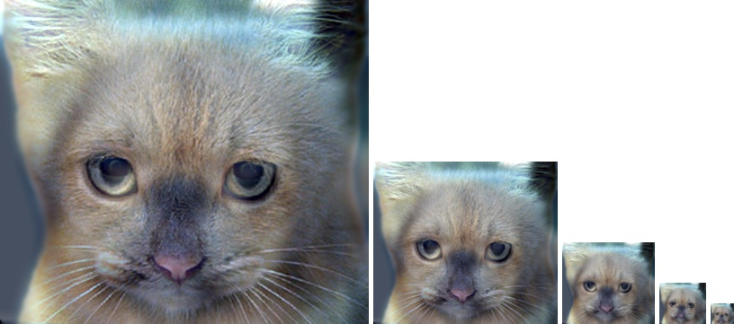
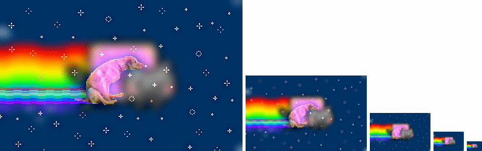

My show-off, hybrid gif! (for extra credit of course)
In this homework assignment there were two main parts:
Using filters, we can do interesting actions such as edge detection, image blurring, or whatever this abomination could be called. If you go into the frequency domain you can also extract important information which can be used to do a lot of useful things like those hybrid images I mentioned a few lines ago.
To filter, I first expanded the image to be filtered so that one half of the filter's padding would be added to each side of the source image. This is due to the fact that the filtering matrix will need to be multiplied by values that are technically out of the boundaries of the image. In this assignment, we had the option to add 0's for the padding or to reflect the image. I chose to reflect the image at the edges as that typically gives better results.
% Symmetric padding with the default Matlab imfilter is as easy as adding symmetric to the arguments
B = imfilter(A,H,'symmetric');
% To achieve this effect, I padded the array with the built-in padarray() available in Matlab
% get filter size and width
[f_r, f_c] = size(filter);
r_dif = floor(f_r/2);
c_dif = floor(f_c/2);
% create the padded image
% padded image has the edge reflected across
padImg = padarray(image,[r_dif, c_dif],'symmetric');
The rest of the filtering operation is fulfilled by essentially doing a dot product at every pixel location from the original image and then replacing that pixel value in a new image with the output of the dot product.
|    |
|    |
From the top left: the original image, a Laplacian filter of the image, sobel filter, high pass filter, blur filter, and a large blur
As outlined in the paper and on this website listed in the assignment, hybrid images are created by combining the high pass filter of one image with the low pass filter of another image. The image from which the high pass filter was taken will be the image that is visible from up "close" and the image from which the low pass filter was taken is the image that is visible from "far" away (or, when the image is cropped to be very small--pretty much the same as being far away).
This is all accomplished with primarily a few lines of code:
low_frequencies = my_imfilter(image1, filter);
high_frequencies = image2 - my_imfilter(image2, filter);
% combine the high and low pass filters
hybrid_image = low_frequencies + high_frequencies;
In the case of the test image set with the cat and the dog, the cat has the high pass filter and the dog has the low pass filter.
Cat with a high pass filter
Dog with a low pass filter
When this is added together you get the hybrid image which, as was stated above, can be visualized from different images by shrinking the image:
For extra credit, I decided to apply the hybrid image idea to gifs. Which, as we all know is pronounced like the peanut butter, Jiff. This did create some complications due to the fact that gifs have a low range of colors (256 colors in their mapping) and that each frame of the gif must be filtered separately. Most of the complications in this endeavor were spent in figuring out how to deal with gifs programmitcally.
To read in a gif you can simply use the built-in imread() function in Matlab:
[img1, map1] = imread('../data_new/nyanDog.gif');
[img2, map2] = imread('../data_new/nyanCat.gif');
[~, ~, ~, frames] = size(img1); % getting the number of frames in the gif
This lets you read in the gifs I used which I obtained from this Buzzfeed article and which are reproduced in their original glory below. It is of course, the venerable meme, the nyan cat, and the relative newcomer, the nyan dog.
I decided to have nyan dog be the gif that has the high pass filter applied so that it could be visible from up close and the nyan cat have the low pass filter so that it would be visible from far away and since it is more recognizable.
I personally find that the high pass filter of the nyan dog looks super cool
To add these images together into a gif in Matlab and write them you need write the gif one frame at a time: (credit to this article for helping me out)
for f = 1:frames
% turn mapped image to rgb for processing
img1Frame = ind2rgb(img1(:,:,:,f), map1);
% get in singles format
img1Frame = im2single(img1Frame);
%%%%%%%%%%%%%%%%%%%%%%%%%%%%%%%%%%%
% Insert work with this frame ....
%%%%%%%%%%%%%%%%%%%%%%%%%%%%%%%%%%%
% Turn worked frame back into indexed image
[img, color_map] = rgb2ind(img1Frame,256); % 256 is the max # of colors for gifs
% Now, write the image as a gif
% It needs to be done one frame at a time and appended to the previous frame
if f == 1
imwrite(img,color_map,'filename.gif','gif','DelayTime',0,'Loopcount',inf);
else
imwrite(img,color_map,'filename.gif','gif','DelayTime',0,'WriteMode','append');
end
end
After all of that, you will get a beautiful hybridized meme like what you see below:
The beautiful nyan catdog
This can be visualized from far and close by actually stepping away from your computer or you can just look at the image below:
{kind=link}